SalmoSonar Visión
datasets · videos · predicciones · atención
Datasets /
SalmonMandag (Roboflow, río Eidselva)
Aumento del detector de peces; la clase "15" es un residuo de etiquetado, usar solo salmon.
- Dominio
- Salmón bajo el agua en contador de río (Noruega), segunda serie del mismo autor
- Formato
- YOLO cajas
- Clases
- 15, salmon
- Aquí
- completo · 137 imágenes · 114 objetos
- Licencia
- CC BY 4.0
- Cita
- SalmonMandag dataset, Roboflow Universe (Jarl Even Englund)
Archivos de la fuente
- README.dataset.txt 151 Bytes
- README.roboflow.txt 988 Bytes
- data.yaml 285 Bytes
Corridas sobre este dataset
| Corrida | Dataset | Modelo | Imágenes | Precisión | Recall | F1 | IoU medio | Error puntos |
|---|---|---|---|---|---|---|---|---|
| peces_obb-salmon_mandag-test 2026-11-10 15:41 |
salmon_mandag | best.pt | 14 | 21,4 % | 27,3 % | 24,0 % | 0,83 | – |
Todas
137 imágenes

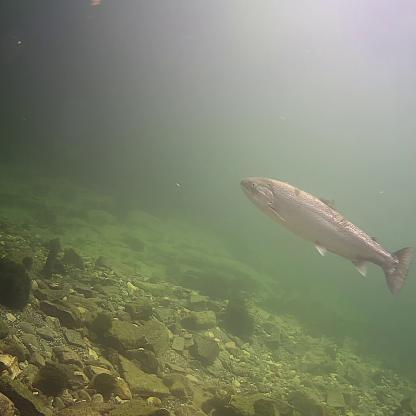
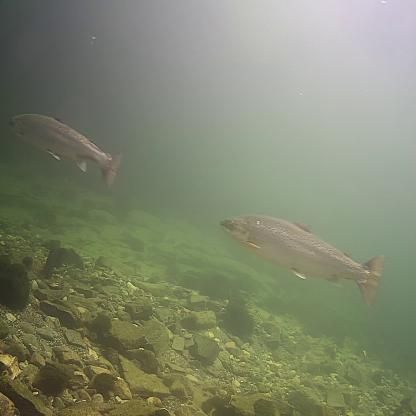
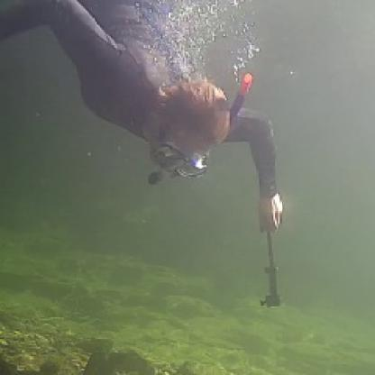
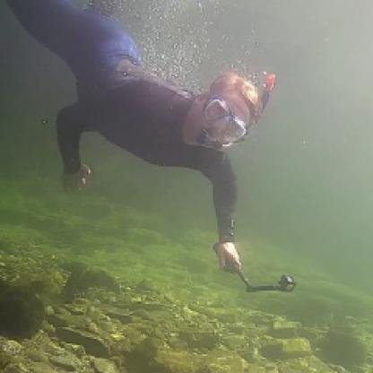
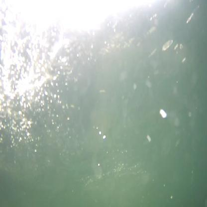
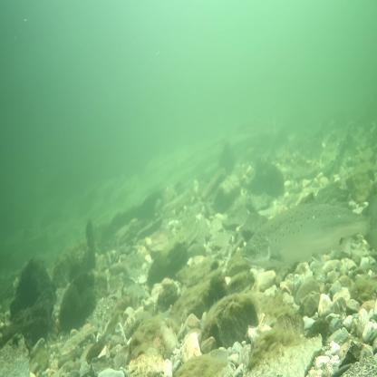
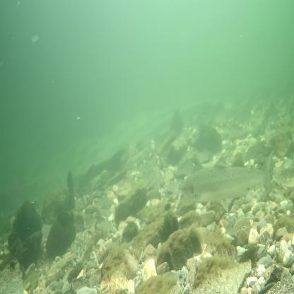
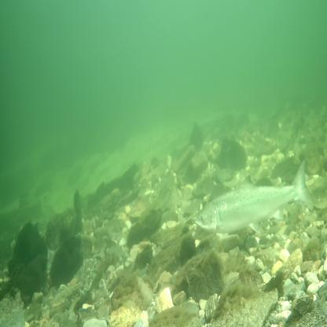
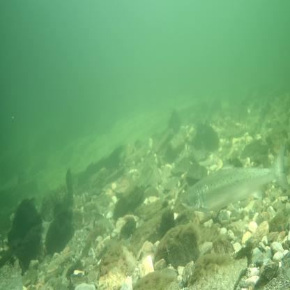
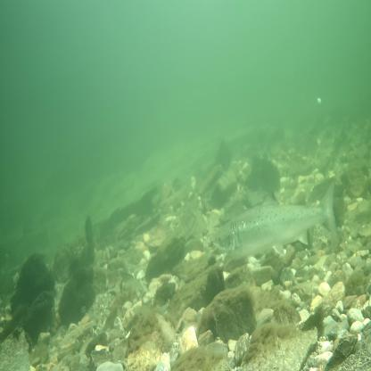
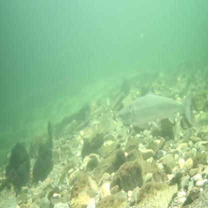